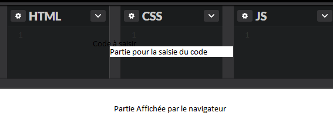

Dans l'enregistrement du rapport vous devez mettre votre nom après le numéro du TP, par exemple TP01gates.pdf
Ecrire une page HTML et la présenter avec du CSS
Ce TP fera l'objet d'un rapport qui sera déposé sur la plateforme (vous trouverez les définitions en cherchant sur votre moteur de recherche favori)
Utiliser l'outil capture d'écran sous windows
Utiliser la fonction imprime écran sur votre clavier
Utiliser l'outil paint sous windows, pour sélectionner la partie qui vous intéresse
Ouvrir une page (si elle n'est pas vide)
Une petite vidéo sur notepad
Paramétrer Notepad de la façon suivante
Copen est un site en ligne qui permet d'avoir simultanément le code et son résultat
il se trouve à cette adresse, il faut cliquer sur newpen pour le lancer.
Créer un site web statique est simple, il suffit de créer un répertoire au nom du site dans lequel sont insérés des fichiers html.
L'usage veut que le nom du premier fichier soit index.htm, de façon à identifier la page d'entrée du site.
Il est nécessaire d'organiser les fichiers pour faciliter la maintenance du site.
Ainsi à l'intérieur du répertoire il faut créer des sous répertoire en fonction des spécialités des fichiers.
Par exemple un répertoire img contiendra tous les fichiers images, un répertoire download contiendra tous les fichiers pdf destinés au téléchargement.
Voici l'arborescence du site :
Pour nos exercices, créez un répertoire TPsites, vous mettrez les pages dans le répertoire vues
Définir l'arborescence du site officemaster dans lequel nous aurons des répertoires pour les fichiers :
Nous allons utiliser le site codepen dans la mesure où pour l'instant il est difficile d'utiliser notepad++
<!DOCTYPE html>
<title>ma première page</title>
Bravo voici une page sans balises
<!DOCTYPE html>
<html>
<head>
<title>ma première page</title>
</head>
<body>
Bravo voici une page sans balises
</body>
</html>
Modifier la page de cette façon :
<p>Bravo voici une page avec la balise p</p>
Jusqu’à présent le texte est brut, il n’y a ni couleur, ni forme gras ou italique, toutes ces choses qui sont facilement obtenues avec un traitement de texte.
Si le HTML permet certaines mises en forme, il faut les bannir car il s’agit de pratiques anciennes.
Comment faire pour écrire la phrase en rouge ?
Grâce au memento css donnez la structure d'une règle css.
Ajoutez entre les balises HEAD de votre page la ligne suivante :
<link href="style.css" rel="stylesheet" media="screen">Cliquez sur ce lien et validez votre fichier
p {color: red;}Ajoutez dans la page html la phrase Voici mon titre H1 et encadrer la de la balise h1
Afficher toutes les balises h1 en orange et les balises p en noire avec une fonte de 13
A l'aide de la balise <pre>, affichez la structure html d'une page qui pointe sur un fichier css dont le nom est style.css
Nous allons maintenant mettre notre code dans une boite. Cette technique facilite la mise en page et la gestion de style de votre page web
Pour l'instant nous allons créer 3 boites :
Juste après le body vous écrirez :
<p>Bravo voici une page avec la balise p</p>
<div class="conteneur">
<div class="titre"><p>Le titre du conteneur</p>
</div>
<div class="texte">
<p>Tout ce texte se trouve dans un conteneur,
Il peut être facilement orienté à droite ou à gauche, voir centré. Mais ce qui est le plus intéressant est son positionnement:
le texte peut avoir des marges à l'intérieur, mais le conteneur peut aussi avoir des marges avec les blocs qui l'environnement.
A l'intérieur du conteneur, il faut utiliser l'instruction padding pour positionner le texte. A l'extérieur du conteneur il faut utiliser le marging pour positionner le bloc.
Notre objectif ici est de centrer le bloc en positionnant le texte à droite.
</p>
</div>
</div>
.conteneur{}Pour la class titre :
Pour la class texte :
Copiez le code, commenté, lié au css dans votre rapport.